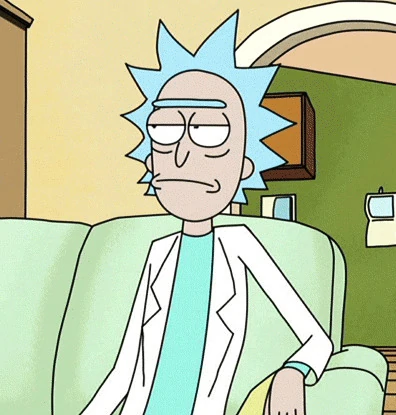

Eu me chamo Fernando Perin dos Santos, possuo 15 anos e moro em Getúlio Vargas, as minhas matérias favoritas são Desenvolvimento de Web, geografia, história, matemática e principalmente química. No meu tempo livre eu gosto de ouvir música, fazer exercícios, e ficar deitado pensando sobre as minhas ações e sobre o meu futuro, as minhas música favoritas no momento são: Pensa bem(yung lixo), Xo tour life(lil uzi vert), 21 guns(Green day) e duality(slipknot).
Eu não pretendo seguir pela carreira de programador, pois pretendo me especializar em química e em financias para ser empresário e talvez fazer algo que mude o mundo. As pessoas que eu mais admiro são Gengiskan, Nikola Tesla e Elon Musk.
Minhas cores favotiras são: preto, roxo e azul e minha série favotira é rick and morty, pois ela mudou a minha forma de pensar e viver, pois lá no fundo todos somos e queremos algum dia ser igual Rick Sanchez (personagem principal) uma pessoa cuja perto das outras seja praticamente um Deus, mas que acabou perdendo toda a esperança e que agora só se importa com quem ele ama e com ningué mais. Essa é a minha maior inspiração Rick Sanchez um personagem de uma série animada.
Rick Sanchez